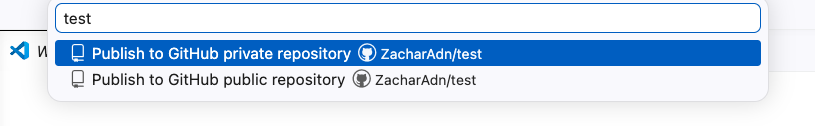

לפני שמתחילים
- 💻מחשב Mac או Windows
- 🌐חיבור אינטרנט
- 📧חשבון מייל פעיל
- 📝VS Code מותקן (קוד פתוח, חינם)
1
פתיחת חשבון GitHub
כ-3 דקות
GitHub זה השרת בענן שבו ה-repos שלכם חיים — מקום ציבורי (או פרטי) שאליו דוחפים את הקוד. בלי חשבון, אין לאן לדחוף.
עקבו אחרי השלבים:
- גשו ל-github.com/signup.
- הזינו מייל פעיל שאתם בודקים — לשם יגיע קוד אימות וגם הודעות מ-GitHub.
- בחרו סיסמה חזקה (12+ תווים).
- בחרו username — זה ההזדהות שלכם ב-GitHub לטווח ארוך. עדיף משהו מקצועי (לדוגמה
shira-cohen) ולאcool_dude_2003. - פתרו את ה-CAPTCHA, אמתו במייל עם הקוד שתקבלו, ובחרו את התכנית החינמית (Free).
💡 ה-username חשוב
הוא נכנס לכל ה-URLs של ה-repos שלכם (github.com/username/repo-name) ולפרופיל. אפשר לשנות מאוחר יותר, אבל זה שובר לינקים קיימים — עדיף לבחור פעם אחת ולהישאר.
2
בדיקה — האם Git כבר מותקן אצלכם?
דקה
על הרבה מחשבים Git כבר מותקן (במיוחד Mac עם xcode-select מהעבר). נבדוק לפני שמורידים שוב — אם זה מותקן, מדלגים ישר לשלב 4.
עקבו אחרי השלבים:
- פתחו את VS Code.
- פתחו את הטרמינל הפנימי —
Ctrl+`(בק-טיק, התו מעל ה-Tab). ב-Mac גםCmd+`עובד, או דרך התפריט Terminal → New Terminal. - הקלידו ולחצו Enter:
git --version
✅ קיבלתם תשובה כמו
מצוין — Git כבר מותקן. דלגו ישר לשלב 4 (הקונפיגורציה).
git version 2.43.0?⚠️ קיבלתם
Git לא מותקן (או לא ב-PATH). המשיכו לשלב 3 ותתקינו.
command not found או 'git' is not recognized?3
התקנת Git (רק אם שלב 2 נכשל)
5–10 דקות
Git זו התוכנה שמנהלת גרסאות של הקוד שלכם על המחשב. Git ≠ GitHub: Git רץ אצלכם, GitHub זה השרת. שניהם עובדים ביחד.
🍎 Mac
- פתחו טרמינל (Spotlight → Terminal, או הטרמינל של VS Code). הקלידו:
xcode-select --install - ייפתח דיאלוג של Apple — לחצו Install וחכו לסיום (3–5 דקות).
- בדיקה: סגרו ופתחו טרמינל חדש, הקלידו
git --version— עכשיו אמור לעבוד.
🪟 Windows
- גשו ל-git-scm.com/download/win — ההורדה תתחיל אוטומטית.
- פתחו את קובץ ההתקנה והריצו אותו.
- Next-Next-Next — ברירות המחדל בסדר. שימו לב במסך אחד: "Adjusting your PATH environment" — בחרו "Git from the command line and also from 3rd-party software" (האמצעית). זה מה שמאפשר ל-VS Code ולטרמינל לראות את Git.
- סיימו את ההתקנה.
- בדיקה: סגרו את VS Code לגמרי ופתחו מחדש (לא רק חלון — תהליך מלא), פתחו טרמינל פנימי, והקלידו
git --version.
⚠️ עדיין
ב-Windows — תעשו restart למחשב כדי שה-PATH יתעדכן באופן מלא. ב-Mac — וודאו שה-command not found אחרי ההתקנה?xcode-select --install סיים לרוץ (לפעמים לוקח 10 דק').
4
קונפיגורציית Git — שם ומייל
2 דקות
כל commit שאתם תעשו יישא את השם והמייל שלכם. בלי הקינפוג הזה, Git לא יודע מי אתם — וה-commits לא ייוחסו לחשבון שלכם בגרף התרומות ב-GitHub.
עקבו אחרי השלבים:
- בטרמינל הפנימי של VS Code, הקלידו (החליפו
"השם שלך"בשם המלא שלכם):git config --global user.name "השם שלך" - אחר כך, הקלידו (החליפו במייל שאיתו נרשמתם ל-GitHub בשלב 1):
git config --global user.email "your-email@example.com" - בדיקה — שתי השורות צריכות להופיע:
git config --global --list
💡 למה
--global?--global אומר ל-Git להחיל את ההגדרה על כל ה-repos במחשב — פעם אחת לכל החיים, לא צריך לחזור על זה לכל פרויקט חדש.
⚠️ המייל חייב להתאים
המייל שאתם מקלידים פה חייב להיות זהה למייל שאיתו נרשמתם ל-GitHub. אם הוא שונה — ה-commits לא ייוחסו לכם בגרף התרומות בפרופיל.
5
יצירת repo חדש ב-GitHub
3 דקות
עכשיו ניצור את ה-repo עצמו על השרת של GitHub — לפני שנקלן אותו למחשב.
↪️ כבר יש לכם קוד או מסמכים מקומיים שרוצים להעלות?
דלגו ישר לשלב 7 — שם מראים איך לוקחים תיקייה קיימת שיש בה כבר קבצים, ויוצרים ממנה repo ב-GitHub בלחיצה אחת מתוך VS Code (בלי ליצור repo ריק ב-GitHub ובלי Clone).
עקבו אחרי השלבים:
- היכנסו ל-github.com עם החשבון שפתחתם בשלב 1.
- בפינה הימנית למעלה — לחצו על האייקון + ובחרו New repository. (לחלופין: גשו ישר ל-github.com/new.)
- Repository name — תנו שם קצר ותיאורי באנגלית, ללא רווחים. לדוגמה:
my-first-repo. - Description (optional) — שורה אחת מה הפרויקט עושה. אפשר לדלג.
- בחרו Public (כולם רואים) או Private (רק אתם ומי שתזמינו). לתרגול — Public זה בסדר גמור.
- סמנו ✅ Add a README file. זה יוצר קובץ ראשוני, מה שמקל על ה-clone והעריכה.
- השאירו את שאר השדות (gitignore, license) בברירת מחדל.
- לחצו על הכפתור הירוק Create repository.
💡 איך ה-repo נראה עכשיו
אחרי הלחיצה — תועברו לדף ה-repo. שמרו את ה-URL — הוא ייראה כמו github.com/your-username/my-first-repo. נחזור לכאן בעוד רגע.
6
Clone — להוריד את ה-repo ל-VS Code
3 דקות
Clone = להוריד עותק מקומי של ה-repo, עם הקישור ל-GitHub כבר מוגדר. מהרגע הזה — כל קומיט שאתם עושים יודע איפה ה-"בית" שלו (GitHub).
עקבו אחרי השלבים:
- בדף ה-repo ב-GitHub, לחצו על הכפתור הירוק Code → בלשונית HTTPS → לחצו על אייקון ההעתקה ליד ה-URL. (ה-URL ייראה:
https://github.com/your-username/my-first-repo.git) - חזרו ל-VS Code.
- לחצו
Cmd+Shift+P(Mac) אוCtrl+Shift+P(Windows) — נפתחת ה-Command Palette למעלה. - הקלידו "Git: Clone" ובחרו את האפשרות שעולה.
- הדביקו את ה-URL שהעתקתם, לחצו Enter.
- בחרו תיקייה במחשב לשמור בה (לדוגמה Documents או Desktop).
- כשההורדה הסתיימה, VS Code ישאל "האם לפתוח את התיקייה?" — לחצו Open.
⚠️ Clone — לא "Publish to GitHub"!
אם VS Code מציע לכם בכלל איפשהו "Publish to GitHub" — אל תלחצו. זה זרימה אחרת (פתיחת repo חדש מ-VS Code), והיא תיצור repo שני בחשבון שלכם במקום לעבוד עם זה שכבר יצרתם.
💡 בפעם הראשונה — אימות GitHub
בלחיצה הראשונה על Clone, VS Code יבקש מכם להתחבר ל-GitHub. הוא יפתח דפדפן, תאשרו את ההרשאה, וזה יחזיר אתכם ל-VS Code — מאותו רגע, החיבור פעיל.
7
כבר יש קוד מקומי? — Publish to GitHub בלחיצה
3 דקות
זה המסלול הקצר אם יש לכם כבר תיקייה עם קבצים על המחשב (קוד, מסמכים, תמונות — כל דבר) ואתם רוצים להעלות אותה ל-GitHub בלי ליצור repo ריק ידנית ובלי Clone. VS Code עושה את הכל בלחיצה אחת — מאתחל git, יוצר את ה-repo ב-GitHub, ודוחף את הכל.
↪️ הגעתם משלב 5+6?
דלגו לשלב 8. השלב הזה הוא מסלול חלופי לאלה שעוד לא יצרו repo ב-GitHub.
עקבו אחרי השלבים:
- ב-VS Code: File → Open Folder ובחרו את התיקייה שיש בה את הקבצים שלכם.
- פתחו את Source Control (אייקון הענף בצד שמאל, או
Cmd/Ctrl+Shift+G). תראו את ההודעה: "The folder currently open doesn't have a Git repository". - לחצו על הכפתור Publish to GitHub (לא על Initialize Repository).
Source Control — לפני אתחול: הכפתור Publish to GitHub

- למעלה במסך תיפתח רשימת בחירה — הקלידו שם ל-repo ואז בחרו אחת משתי האפשרויות:
- Publish to GitHub private repository — רק אתם רואים אותו (מתאים לרוב המקרים).
- Publish to GitHub public repository — כל אחד יכול לראות אותו.
בחירת שם + private/public ב-Command Palette

- אם VS Code שואל אילו קבצים לכלול — סמנו את כולם (או רק את אלה שאתם רוצים שיעלו).
- חכו כמה שניות. בסיום תופיע הודעה: "Successfully published" עם לינק ל-repo החדש.
- לחצו על הלינק — תועברו ישר לדף ה-repo ב-GitHub, וכל הקבצים שלכם כבר שם ✅
💡 מה Publish to GitHub עושה מאחורי הקלעים
בלחיצה אחת VS Code מבצע את הרצף: git init (אתחול מקומי) → יצירת repo חדש בחשבון GitHub שלכם דרך ה-API → git add + git commit ראשון → הוספת ה-remote → git push. ידנית זה 5 פקודות; פה זו לחיצה אחת.
⚠️ אם הכפתור לא מופיע
אם במקום שתי האפשרויות אתם רואים רק Initialize Repository — סימן שהתיקייה כבר היא repo (יש בה .git/ נסתרת). אם זה לא רצוי, אפשר למחוק את התיקייה הנסתרת .git ולנסות שוב — אבל זהירות, זה מוחק את ההיסטוריה המקומית.
8
Stage + Commit + Push — הזרימה לכל שינוי עתידי
3 דקות
הגדרתם את ה-repo (בין אם דרך Clone או דרך Publish). מהרגע הזה, כל פעם שאתם משנים קובץ — הזרימה היא אותה: ערכו → Stage עם + → Commit & Sync. שתי לחיצות, ובלי לעבור לטרמינל.
חלק א' — שינוי קובץ:
- ב-Explorer (סמל הקבצים בצד שמאל) — לחצו על קובץ קיים, לדוגמה
README.md. - הוסיפו או שנו טקסט.
- שמרו:
Cmd+S(Mac) אוCtrl+S(Windows).
חלק ב' — Stage עם כפתור ה-+:
- בצד שמאל, לחצו על אייקון Source Control (ענף עם נקודה, או
Cmd/Ctrl+Shift+G). - תחת Changes תראו את כל הקבצים ששינתם.
- רחפו עם העכבר על הכותרת Changes או על שורה של קובץ ספציפי, ולחצו על ה-+:
- + ליד Changes = Stage לכל הקבצים בבת אחת.
- + ליד קובץ ספציפי = Stage רק לקובץ הזה.
- הקבצים יעברו למעלה ל-Staged Changes.
כפתור ה-+ ב-Source Control — Stage All Changes

חלק ג' — Commit & Sync בלחיצה אחת:
- בשדה הטקסט למעלה ("Message"), כתבו הודעת commit קצרה ותיאורית. דוגמה:
Add interactive teaching guides and setup instructions for Git and GitHub. - במקום ללחוץ על ✓ Commit הרגיל, לחצו על החץ ⌄ שמימין לכפתור הכחול — נפתחת רשימה.
- בחרו Commit & Sync — זה מבצע commit ואז push ל-GitHub בלחיצה אחת.
- חזרו לדף ה-repo ב-GitHub בדפדפן ורעננו — השינויים אמורים להופיע ✅
החץ ⌄ ליד Commit — בוחרים Commit & Sync

💡 ההבדל בין האופציות בתפריט
Commit — מקליט מקומית בלבד (לא מגיע ל-GitHub). · Commit & Push — Commit + שולח ל-GitHub. · Commit & Sync — כמו Push, ובנוסף מושך עדכונים אם מישהו אחר עבד על אותו repo. בעבודה לבד — Commit & Push מספיק. בעבודה בצוות — תמיד Sync.
💡 הזרימה המלאה לזכור
ערכו קובץ → שמרו → + (stage) → הודעת commit → ⌄ → Commit & Sync. זה הזרימה הקבועה לכל קומיט מכאן והלאה.
⚠️ אם Sync או Push נכשל
פתחו את הטרמינל הפנימי (Ctrl+`) — שם תראו הודעת שגיאה ספציפית. הסיבות הנפוצות: (א) לא אישרתם את ההתחברות של VS Code ל-GitHub — סגרו ופתחו VS Code מחדש. (ב) מישהו אחר דחף לאותו repo — לחצו על 🔄 Sync שמטמיע את השינויים שלהם לפני שלכם.